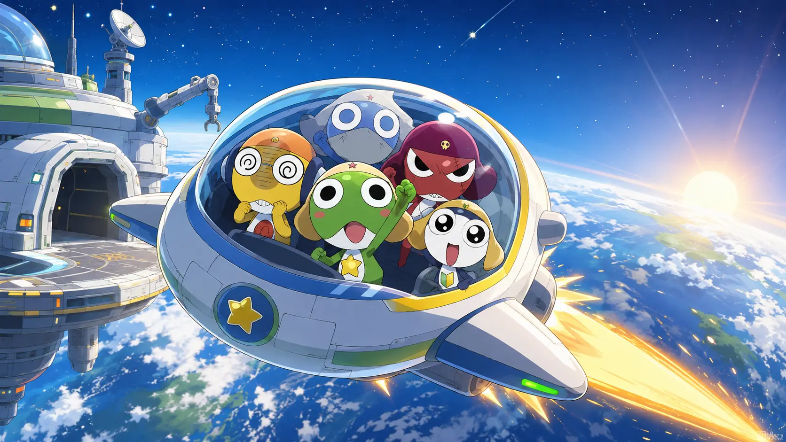

01 / 04
통신 안테나 수리실
KERON TRAINING CAMP
케론별우주선수리 작전
파동·전자기 유도·광학 장치를 직접 조절해 고장 난 우주선을 복구하세요.
MISSION 파동 → 유도 → 광학 → 지구 출항
CADET REGISTRATION
함께 훈련할 대원을 선택하세요
02 / 04
유도 발전기 수리실
03 / 04
레이저 항법 수리실
04 / 04
작전 관제실 · 지구 도착 확인
EARTH ROUTE STORYBOARD
수리 후 실제 엔딩으로 재생
지구 귀환 시퀀스

통신 안테나 수리실
수리율 0%
위험도 0%
TRAINING
훈련 제목
이번 수리 임무훈련 설명
- 원리 발견 장치를 직접 움직이기
- 조건 비교 결과가 달라지는 이유 찾기
- 실제 수리 알아낸 원리로 장치 복구
EARTH FIELD NOTE · REUSABLE MODE
지구 물리 탐사대
고치는 임무는 끝.
이제 지구를 관찰할 차례!
정답을 외우지 않아도 괜찮아요. 먼저 예상하고, 직접 움직이고, 실제로 어떻게 변하는지 확인해 보세요.
1 관찰
2 예상
3 실험
4 발견
탐사를 다시 열 때마다 조건이 달라집니다.
CHOOSE A PHENOMENON
어디부터 관찰할까요?
누적 탐사 기록
0회